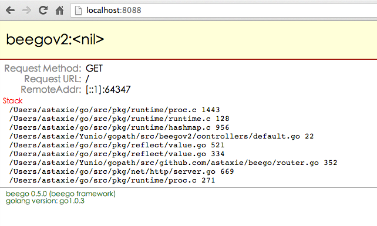

beego设计思路
beego是一个类似python的tornado框架，采用了RESTFul的设计思路，使用Go编写出來的一个极轻量级、高可伸缩性和高性能的Web应用框架。
beego跟其他主流的Web服务器框架不同是采用RESTFul方式来设计，采用Go的struct的组合和Go语言的反射来实现异步处理请求，响应快速，可处理上万并发连接，特别适用于各种服务类的应用。主要有如下的特点：
- 支持MVC的方式，用户只需要关注逻辑，实现对应method的方法即可
- 支持websocket，通过自定义Handler实现集成sockjs等方式实现
- 支持自定义路由，支持各种方式的路由，正则、语意均支持，类似sinatra
- session集成，支持memory、file、redis、mysql等存储
- 表单处理自动化解析，用户可以很方便的获取数据
- 日志分级系统，用户可以很方便的调试和应用日志记录
- 自定义配置文件，支持ini格式的文本配置，可以方便的在系统中调参数
- 采用了Go内置的模板，集成实现了很多Web开发中常用的函数

Hello World
一个最小最简单的应用如下代码所示：
package main
import (
"github.com/astaxie/beego"
)
type MainController struct {
beego.Controller
}
func (this *MainController) Get() {
this.Ctx.WriteString("hello world")
}
func main() {
beego.Router("/", &MainController{})
beego.Run()
}
把上面的代码保存为hello.go，然后通过命令行进行编译并执行：
$ go build main.go
$ ./hello
这个时候你可以打开你的浏览器，通过这个地址浏览http://127.0.0.1:8080返回“hello world”
那么上面的代码到底做了些什么呢？
1、首先我们引入了包github.com/astaxie/beego,我们知道Go语言里面引入包会深度优先的去执行引入包的初始化(变量和init函数，更多)，beego包中会初始化一个BeeAPP的应用，初始化一些参数。
2、定义Controller，这里我们定义了一个struct为MainController，充分利用了Go语言的组合的概念，匿名包含了beego.Controller，这样我们的MainController就拥有了beego.Controller的所有方法。
3、定义RESTFul方法，通过匿名组合之后，其实目前的MainController已经拥有了Get、Post、Delete、Put等方法，这些方法是分别用来对应用户请求的Method函数，如果用户发起的是POST请求，那么就执行Post函数。所以这里我们定义了MainController的Get方法用来重写继承的Get函数，这样当用户GET请求的时候就会执行该函数。
4、定义main函数，所有的Go应用程序和C语言一样都是Main函数作为入口，所以我们这里定义了我们应用的入口。
5、Router注册路由，路由就是告诉beego，当用户来请求的时候，该如何去调用相应的Controller，这里我们注册了请求/的时候，请求到MainController。这里我们需要知道，Router函数的两个参数函数，第一个是路径，第二个是Controller的指针。
6、Run应用，最后一步就是把在1中初始化的BeeApp开启起来，其实就是内部监听了8080端口:Go默认情况会监听你本机所有的IP上面的8080端口
停止服务的话，请按ctrl+c
安装入门
beego虽然是一个简单的框架，但是其中用到了很多第三方的包，所以在你安装beego的过程中Go会自动安装其他关联的包。
- 当然第一步你需要安装Go，如何安装Go请参考我的书 第一章
- 安装beego
go get github.com/astaxie/beego
- 安装bee工具,这个工具可以用来快速的建立beego的应用
go get github.com/astaxie/bee
这样就完成了beego的安装，你就可以开始开发了,可以通过bee工具来创建beego项目

beego依赖的第三方包有如下：
- session模块：github.com/astaxie/beego/session
- session模块中支持redis引擎：github.com/garyburd/redigo/redis
- session模块中支持mysql引擎：github.com/go-sql-driver/mysql
- 模板函数中支持markdown转化：github.com/russross/blackfriday
目录结构
通过如下命令创建beego项目，首先进入gopath目录
bee create hello
这样就建立了一个项目hello，目录结构如下所示
.
├── conf
│ └── app.conf
├── controllers
│ └── default.go
├── main.go
├── models
├── static
│ ├── css
│ ├── img
│ └── js
└── views
└── index.tpl
开发模式
通过如下命令创建beego项目，首先进入gopath目录
我们可以通过如下的方式改变我们的模式：
beego.RunMode = "pro"
或者我们在conf/app.conf下面设置如下：
runmode = pro
以上两种效果一样。
开发模式中
- 开发模式下，如果你的目录不存在views目录，那么会出现类似下面的错误提示：
2013/04/13 19:36:17 [W] [stat views: no such file or directory]- 模板会自动重新加载不缓存。
- 如果服务端出错，那么就会在浏览器端显示如下类似的截图：
